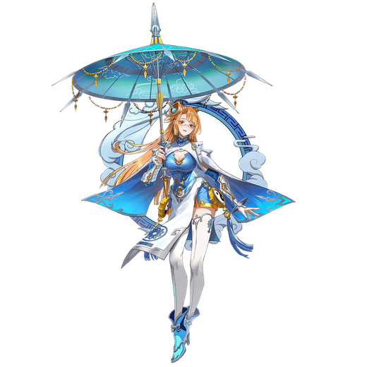

基本データ
- コスト
- 2.0
- 体力
- 未入力
- 赤ロック
- 35
- 動画
- 登録動画

Move Table
| 射撃 | 名称 | 弾数 | 威力 | 備考 |
|---|---|---|---|---|
| メイン射撃 | 玄機・咲雷 | 7 | 210 | 傘から雷光弾を発射 |
| サブ射撃 | 玄機・星虹 | 1(1凸時2) | 300 | 狙撃ビーム、射撃バリア付き |
| 横サブ射撃 | 玄機・迅雷 | 1 | 402 | 雷光弾と竜巻弾の波状攻撃 |
| 前サブ射撃 | 激流 | (100) | 674 | サブ格弾数50消費 少し飛び上がって傘から照射。射撃バリア |
| 後サブ射撃 | 雲輪 | 102～318 | - | ブーメラン |
| 後格闘 | 潦雷 | 81～468 | - | サブ格弾数42～(4凸時28～)消費 雷光弾を拡散連射。射撃バリア |
| レバー入れサブ格闘 | 追い風 | - | - | レバー方向に低空移動。サブ格闘中は誘導切りが追加される |
| モード中 | 名称 | 弾数 | 威力 | 備考 |
| サブ格闘 | 微風 | 100 | - | 飛び上がって傘で浮遊、使用中サブ格弾数が高速で回復。頭上射撃バリア |
| サブ格闘中メイン射撃 | 落雷 | 240～445 | - | サブ格弾数15消費 上空から雷を相手に3発落とす |
| サブ格闘中サブ射撃 | 雷哮電怒 | 300～541 | - | サブ格弾数50消費 上空から雷や雨を相手の周辺に多数落とす |
| 格闘 | 名称 | 入力 | 弾数 | 威力 | 備考 |
|---|---|---|---|---|---|
| 通常格闘 | 傘舞 | NNN | - | 514 | 傘で3回殴った後、上空へ飛び上がる |
| サブ射派生 夜気輝 | N→サブ射 | - | - | 612 | 斜め上に打ち上げ狙撃ビームで追撃 |
| NN→サブ射 | - | - | 695 | ||
| サブ格派生 風立ちぬ | N→サブ格 | - | - | 684 | サイコクラッシャー→竜巻で追撃 |
| NN→サブ格 | - | - | 725 | ||
| 横格闘 | 傘舞・浄塵 | 横 | - | 347 | 回り込みながら傘で連続攻撃 |
| サブ射派生 夜気輝 | 横→サブ射 | - | - | 676 | N格と同様 |
| サブ格派生 風立ちぬ | 横→サブ格 | - | - | 707 | |
| 前格闘 | 傘舞・鋭芒 | 前 | - | 195 | 射撃バリア付きの単発突進 |
| バーストアタック | 名称 | 威力 | 備考 |
|---|---|---|---|
| FMD/SB | 備考 | - | |
| バーストアタック | 晴空天裳 | 879/799 | 雷光弾連射→竜巻に閉じ込め落雷で追撃。ダメージが安定しない |